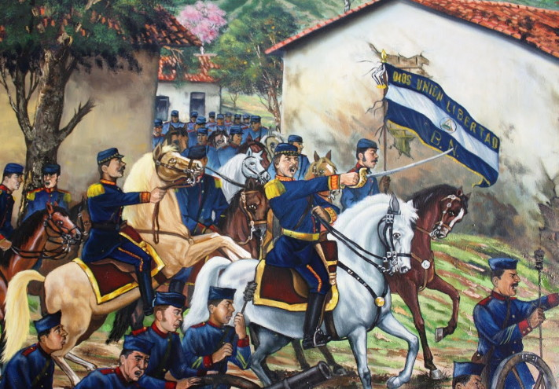
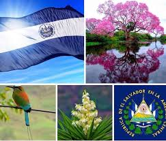
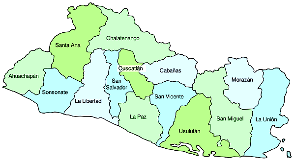
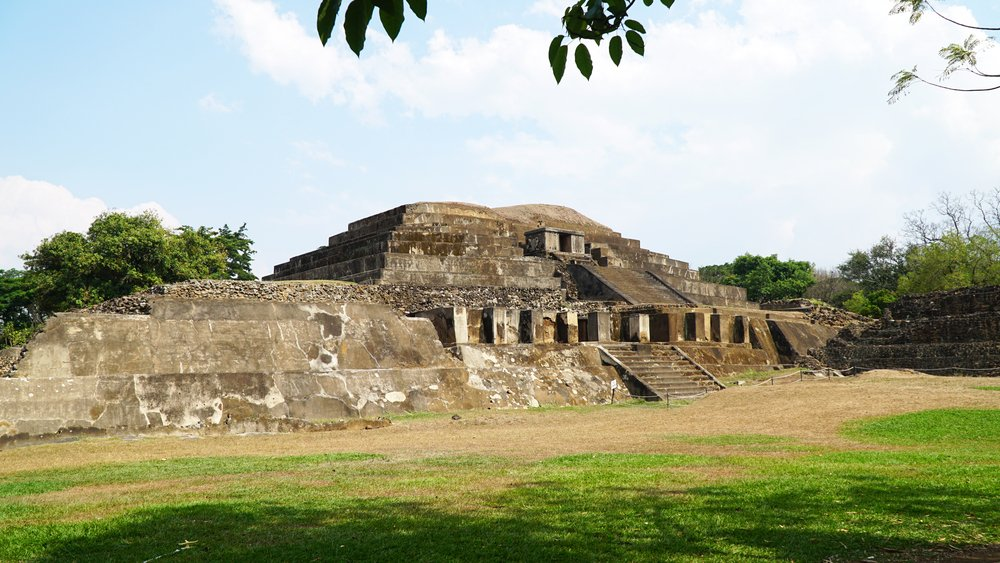
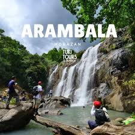
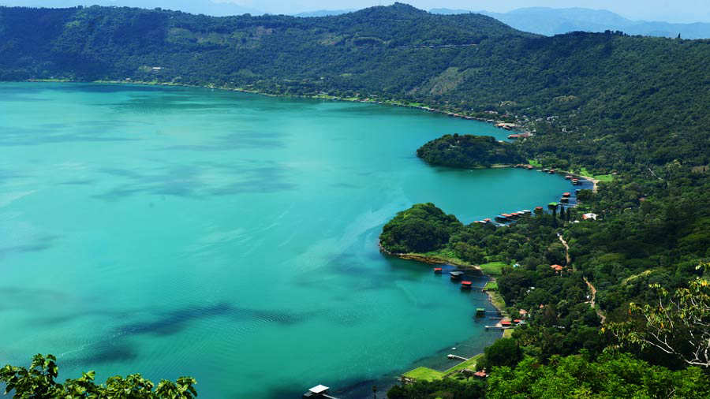

Historia
- 1958:
El Salvador y Guatemala invitan a Honduras, Nicaragua y Costa Rica a decidir la integración de una Asamblea Constituyente dentro de la proyectada Federación Centroamericana (29 Agosto).
- 1969:
Debido a la expulsión de más de 11 mil salvadoreños residentes en Honduras estalla una guerra no declarada entre ambos países. Fuerzas salvadoreñas invaden el territorio Hondureño. (14 Julio). Una reunión de emergencia de la OEA aprueba el acuerdo de Paz entre El Salvador y Honduras. (30 Julio).
- 1980:
Tres de las organizaciones izquierdistas se unen para coordinar la lucha contra el gobierno. (10 de enero). La Junta anuncia un plan radical de la Reforma Agraria. (6 de marzo). Es nacionalizada la Banca Privada Salvadoreña. (7 de marzo). Es asesinado, mientras oficiaba una misa el Arzobispo de San Salvador Oscar Arnulfo Romero. (24 de marzo). José Napoleón Duarte es nombrado Jefe de Estado (13 de diciembre).
- 1981:
José Napoleón Duarte anuncia la formación de una Asamblea Constituyente en 1982. (5 de marzo). Se forma legalmente un nuevo partido político llamado Alianza Republicana Nacionalista (ARENA). (30 de septiembre)
- 1982:
Se celebran elecciones para la Asamblea Constituyente, se designa como Presidente Provisional al Dr. Alvaro Magaña. (28 de marzo); quien forma su gabinete con representantes de diferentes institutos políticos.
- 1984:
Se realizan elecciones para presidente de la República y es electo José Napoleón Duarte (1o. de julio)
- 1985:
Se realizan elecciones para Alcaldes y Diputados, obteniendo una mayoría relativa el Partido Demócrata Cristiano y descollando como segunda fuerza Política ARENA.
- 1988:
Se realizan de nuevo elecciones para Alcaldes y Diputados y esta vez ARENA obtiene la mayoría de Diputados en la Asamblea Legislativa, además de 178 Alcaldes de los 262 que existen en el país. Junto a ésto obtienen por una gran mayoría la Alcaldía de San Salvador, la cual había estado en manos de la Democracia Cristiana, desde hacía más de 20 años.
- 1989:
El 19 de marzo se realizan elecciones para Presidente y resulta electo por un 54.7% del electorado, el Lic. Alfredo Félix Cristiani, candidato por el Partido ARENA. El 11 de noviembre el FMLN, realiza una ofensiva la cual no logra los fines buscados.
- 1992:
El 16 de enero de 1992 se firman los Acuerdos de Paz en Chapultepec.

Símbolos patrios

Extensión Territorial y Departamentos
El Salvador, oficialmente República de El Salvador, es un país soberano de América Central ubicado en el litoral del océano Pacífico con una extensión territorial de 21 041 km².
La República de El Salvador cuenta con 14 departamentos.

Lugares Turísticos


